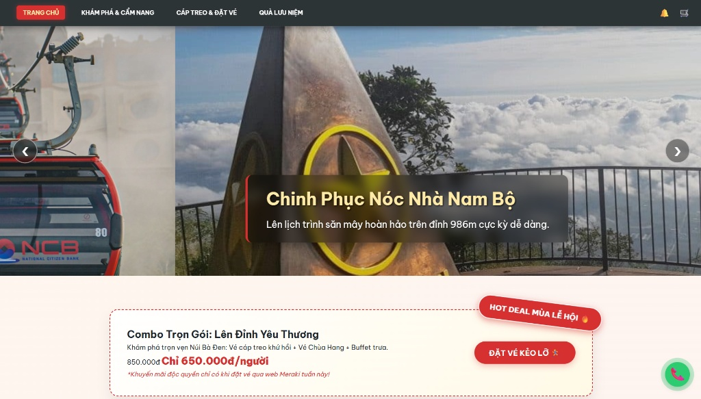

Executive Profile
Hồ Nhựt Tâm
Với tư cách là sinh viên năm 3 chuyên ngành Mạng máy tính & Truyền thông tại Đại học Văn Hiến, tôi không định hướng bản thân trở thành một lập trình viên phần mềm (Developer) truyền thống. Thay vào đó, tôi tập trung phát triển tư duy của một Chuyên gia Tối ưu & Bảo mật Hạ tầng Mạng.
Sự kết hợp giữa tư duy hệ thống mạch lạc và khả năng trực quan hóa qua giao diện Web (UI/UX) cho phép tôi không chỉ xây dựng những hệ thống mạng an toàn, vững chắc, mà còn kiến tạo nên những công cụ quản trị trực quan, hiệu quả.
Đồ Án Tiêu Biểu

Giao diện Đặt vé
Meraki Mountain
Trang web du lịch núi Bà Đen kết hợp chức năng giỏ hàng thông minh lưu trữ tại LocalStorage. Một minh chứng cho sự tinh tế trong UI/UX.

Bảo mật Hệ thống
Hệ thống Firewall Lab
Nghiên cứu và cấu hình hệ thống tường lửa (pfSense) trên môi trường máy ảo VMware, áp dụng chặt chẽ các quy tắc bảo mật mạng.
Phong Cách Sống & Đam Mê

Cà Phê & Chụp Choẹt
Giao diện ban ngày là sinh viên IT, cuối tuần biến hình thành phó nháy. Thích săn lùng mấy quán cà phê núp hẻm Sài Gòn để... ngồi chill và suy ngẫm.

E-Sports: Free Fire
Tay to gánh tạ. Một môn thể thao điện tử rèn luyện ý chí sinh tồn cực mạnh, rèn luyện tư duy chiến thuật và khả năng giữ bình tĩnh khi đồng đội "bóp".

Phim Ảnh & Âm Nhạc
Cách nạp lại năng lượng sau những chuỗi ngày cấu hình Server dài đằng đẵng. Gu đa dạng, xem và nghe để khơi nguồn cảm hứng sáng tạo mới.